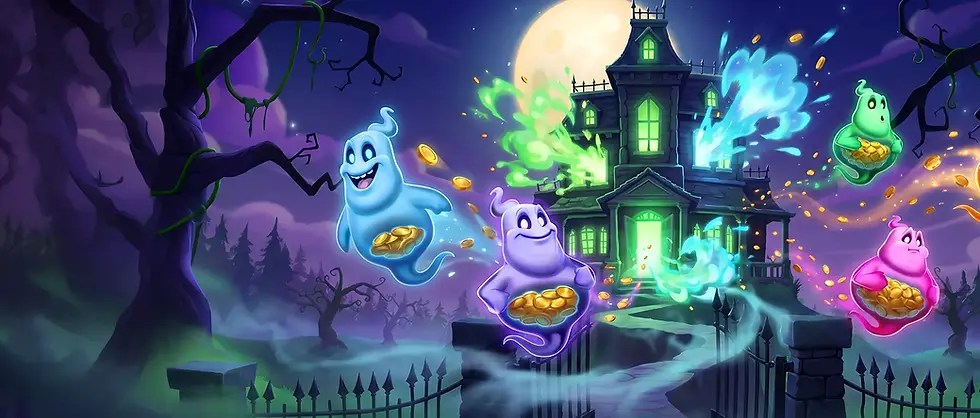

Ghost Booster! GO Guaranteed (Play'n GO): Release Date and Features
Published 29 September 2026. Play'n GO goes haunted for Halloween: Ghost Booster! GO Guaranteed opens its mansion doors on 1 October 2026, built around a Hold & Spin bonus with a guaranteed minimum win.

Official key art: Play'n GO.
Key facts
| Provider | Play'n GO |
|---|---|
| Released | 1 October 2026 |
| Layout | 5 reels, 4 rows, 20 fixed paylines |
| RTP | 96% |
| Max win | 5,000x bet |
| Volatility | Medium (see note below - some sources list medium-high) |
| Bets | 0.20 - 100 |
| Game type | Video Slot |
| Theme | Horror (Halloween) |
| Signature mechanic | GO Guaranteed meter: 5 levels set a floor on the Hold & Spin bonus payout |
| Jackpots | Wheel of Spooks: 4 ghostly jackpot tiers |
Figures above come from the official Play'n GO game page (link below). RTP, max win and layout figures added 2 October 2026 from launch coverage (see Sources); the provider's own page had not published them at the time of writing. Volatility note: this page lists Medium following the official page, while several independent review sites rate the game medium-high.
What we know from the official page
The setting is a haunted mansion full of treasure, worked by Wispy - a friendly blue-white ghost with a weakness for money. He collects coins across the reels and drives the features.
GO Guaranteed meter. Shown above the reels in the base game, it sets a floor on what the Hold & Spin bonus can return. Collector symbols landing with no coins alongside push the meter up one level for every two collected, across five levels. When the bonus starts, you are guaranteed at least the amount shown.
Hold & Spin. Six or more Coin symbols trigger the bonus with three respins. Every new Coin or Collector resets the count to three. Coins stay locked; the round ends when respins run out or the grid fills. If the result lands below the GO Guaranteed value, the meter lifts it up.
Wheel of Spooks. Wispy's coin collecting can trigger a wheel spin awarding one instant prize from four ghostly jackpot tiers.
Coin Collection and Ghostly Progression. Collector symbols sweep up visible coin values in base game and bonus. Collected coins also feed a five-level progression tracker that unlocks the jackpot-wheel interactions.